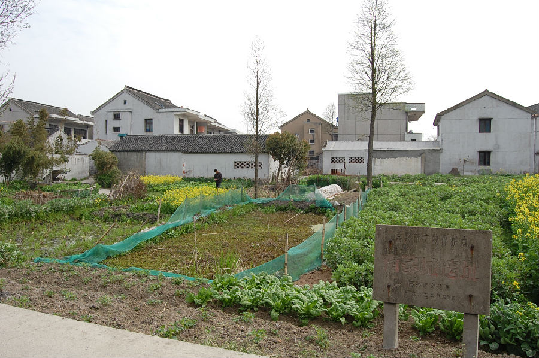

嘉兴市文物保护网 · 市级文物保护点 · 2020-11-02 · 原文

南墓城遗址位于嘉兴市秀洲区王江泾镇阳城村1组，西接阳城村9组，东接墓城港，北靠乍嘉苏高速公路。墓城港名称明万历《秀水县志》已有记载。南墓城遗址现已无高墩，地面上建造有大量村民住房，地面已找不到陶器标本，遗址范围不清。据第二次文物普查资料，该遗址大致相当于新石器时代崧泽文化至良渚文化时期，年代久远，类型较典型，有较高的历史和科学价值。1992年公布为嘉兴市文物保护点。